InícioCuidados com os cabelos
Material para leitura
Cuidados com os cabelos
Download do arquivo em atualização
As páginas do material original estão disponíveis para leitura abaixo. O arquivo para download depende de confirmação da clínica.
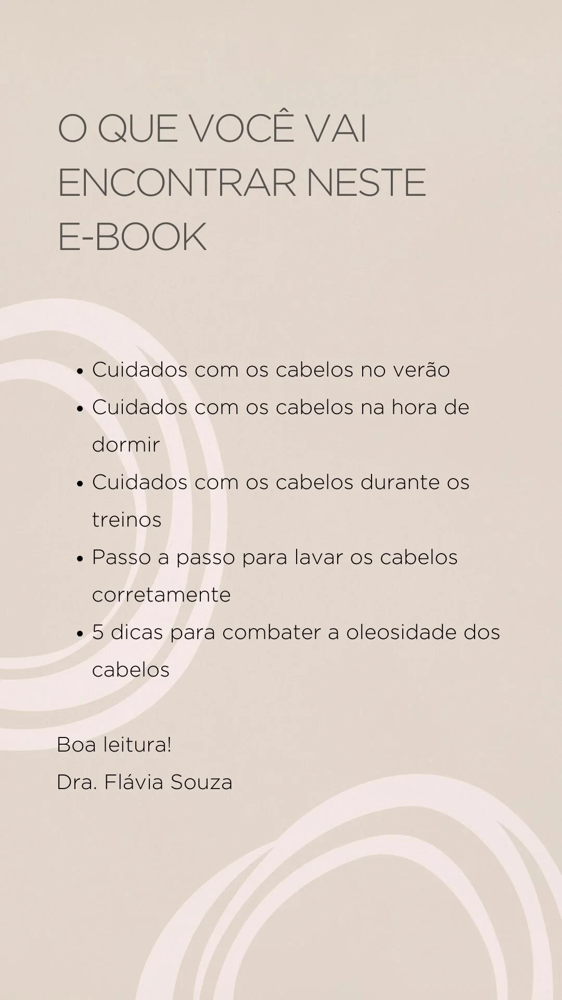
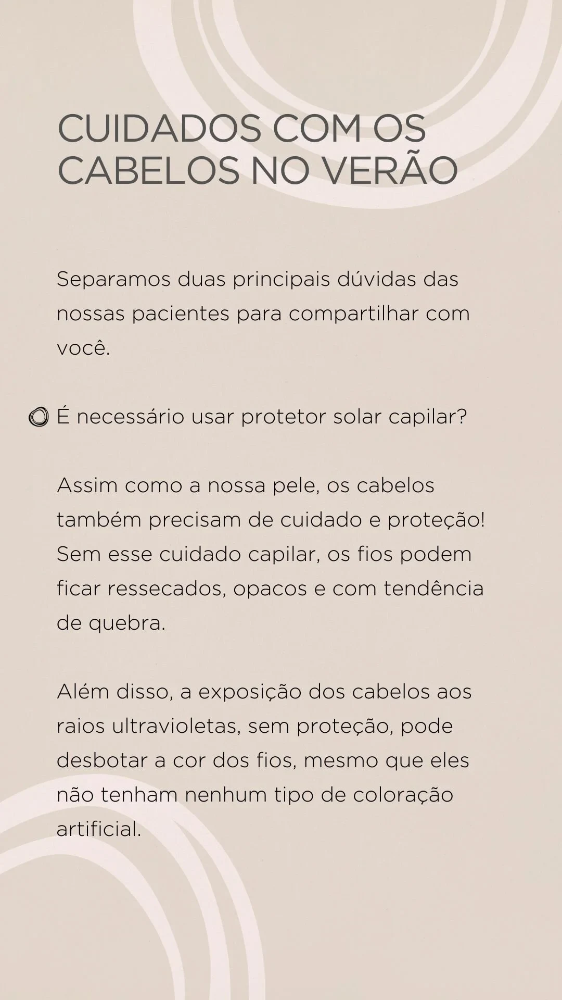
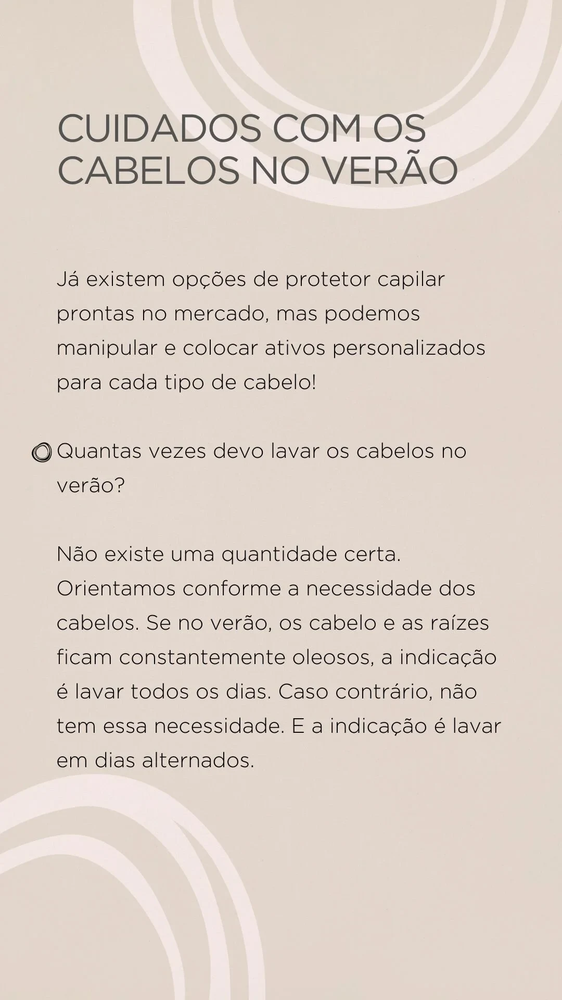
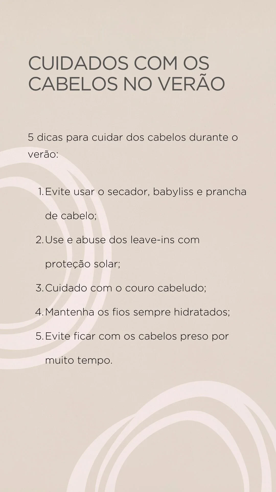
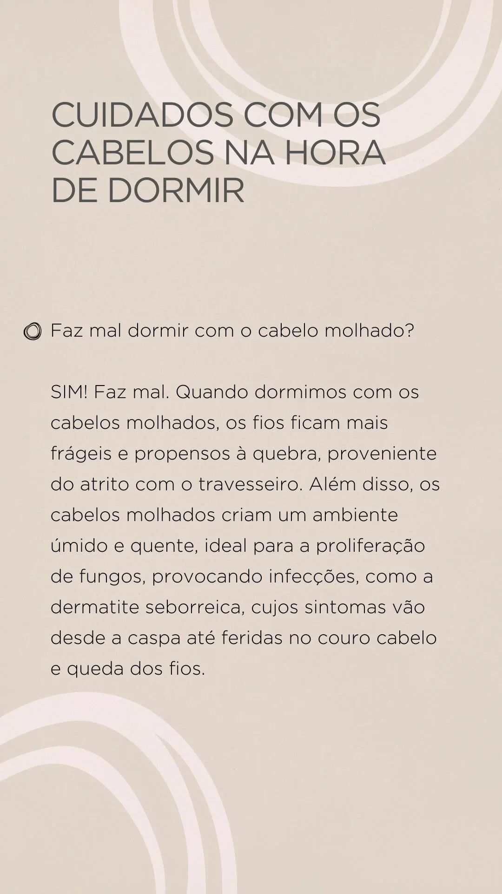
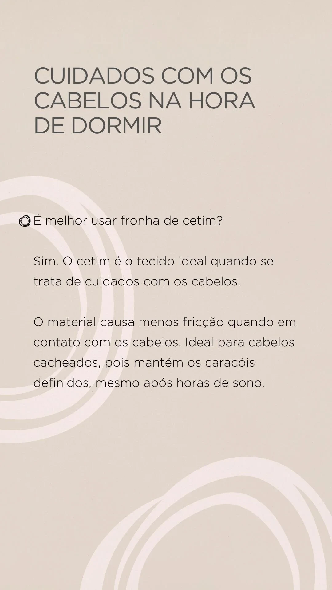
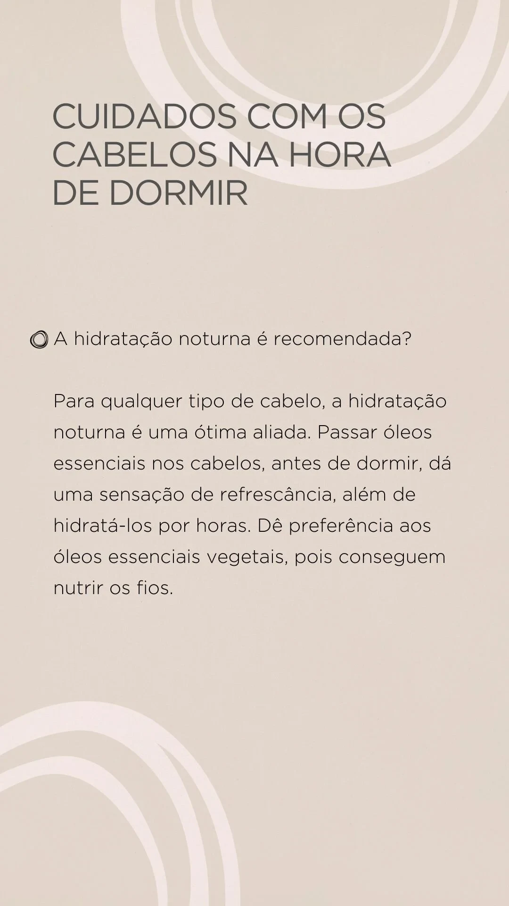
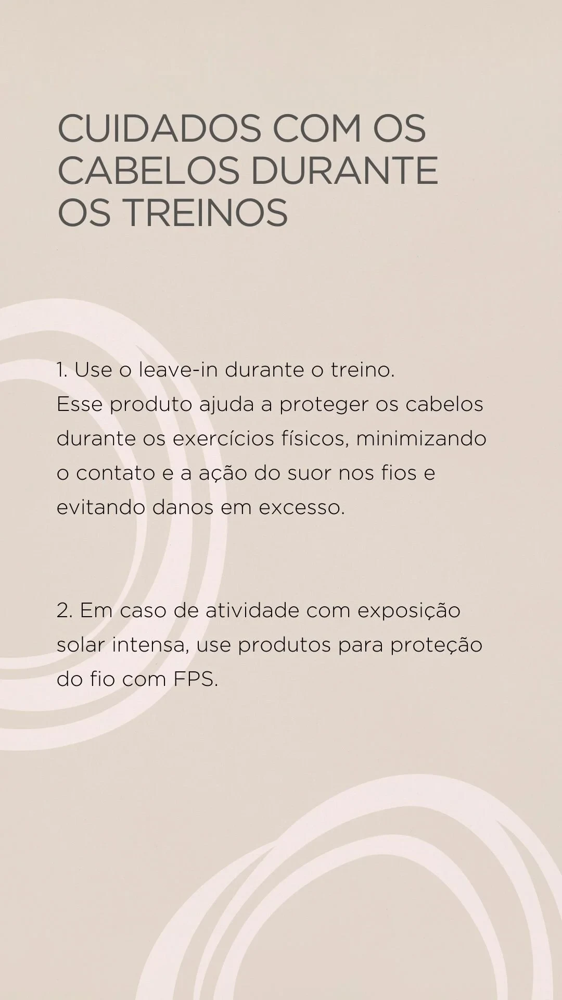
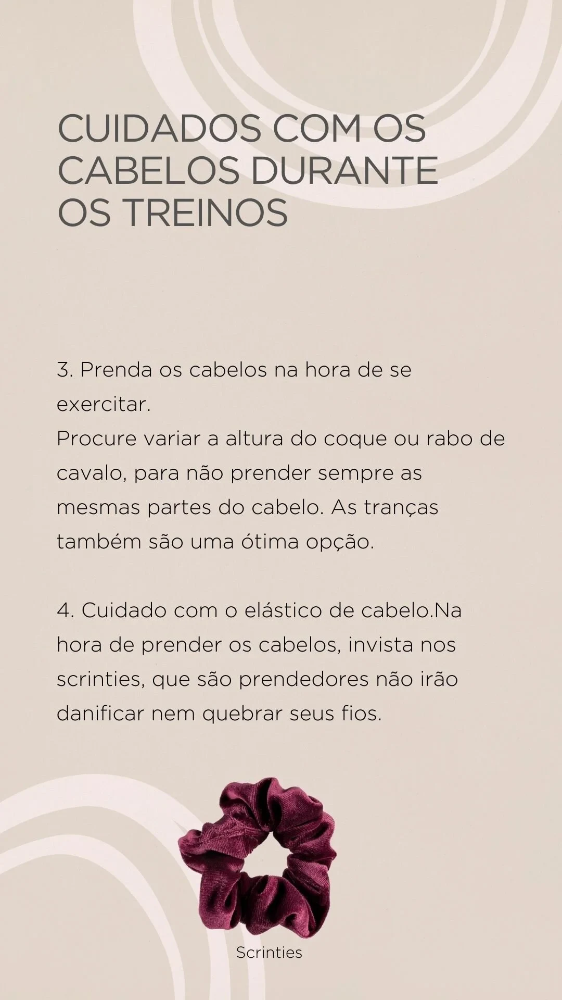
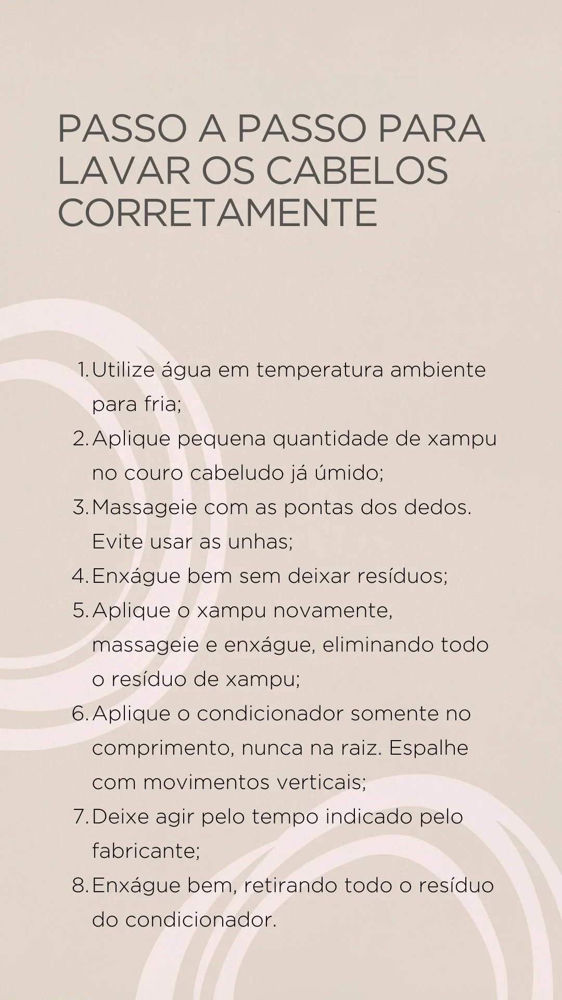
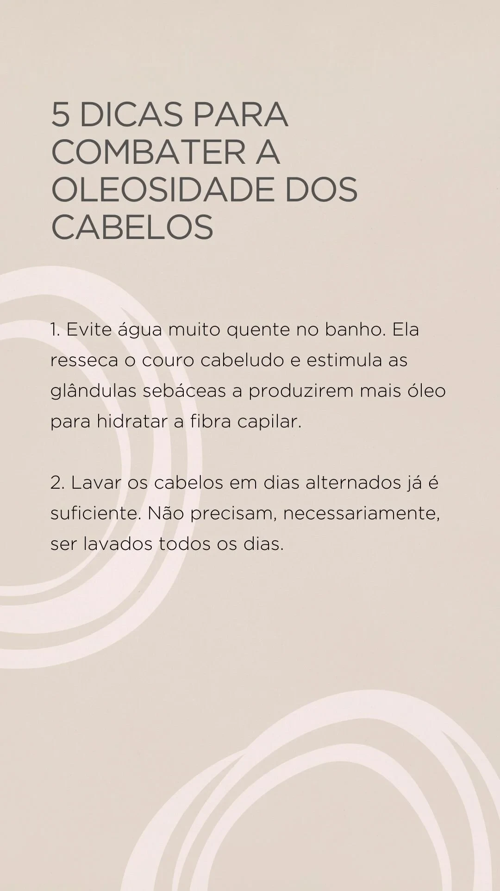
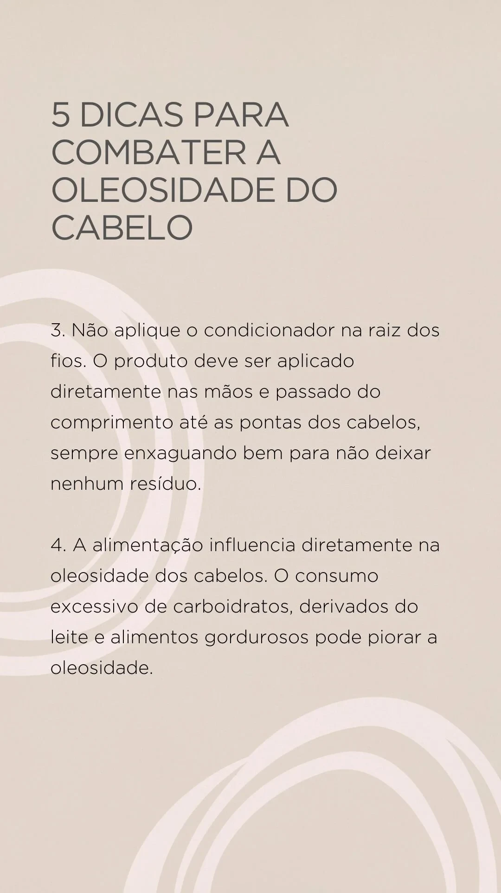
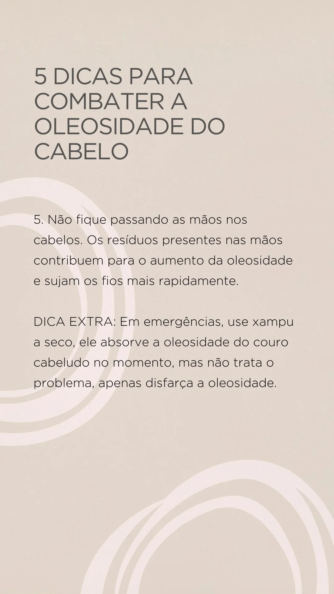
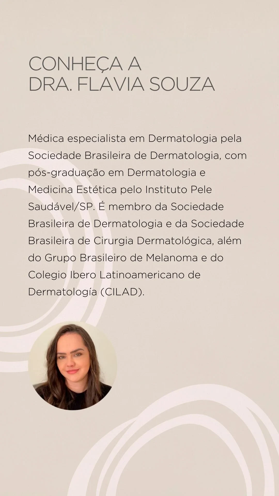
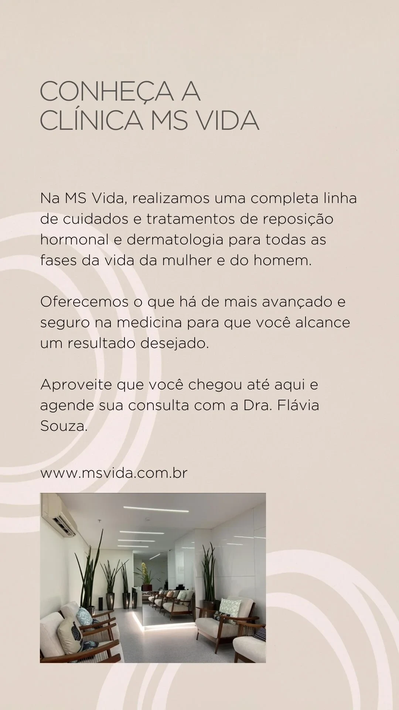